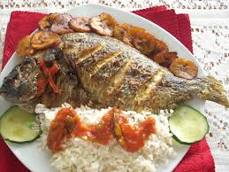
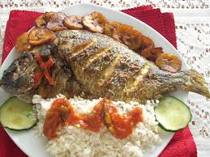

Introduction
Are you ready to know more about one of the most popular Nigerian cuisines? Well, sit tight and fasten your seat belt as the imagination of having this special cuisine right in front of you will take you away!
First of all, let me introduce you to one of these sumptuous delicacies. Nigeria has many kinds of food that different tribes in Nigeria eat. If you are looking to taste different kinds of food from your usual food, Nigerian cuisine is way to go. You probably might have heard that Nigerian cuisines are spicy. Well, not all are like spicy. The best thing about it is you choose how spicy you want it to be. Below, you will find the recipe and :instructions on how to prepare this special dish: Jollof rice
Now, let's get to it!! 😋
Nigerian Dishes
Jollof Rice Recipe
Find the recipe for jollof rice listed below:
- 1 medium-sized onion roughly chopped
- 5 medium-sized Roma tomatoes
- 1/4 vegetable oil
- 3 tablespoon of tomato paste
- 2 habanero pepper or scotch bonnet
- 1/2 teaspoon curry powder
- 1/2 teaspoon thyme
- 1 reaspoon all purpose seasoning
- 2 cups of parboiled rice
- 1/2 teaspoon salt
- 1 knorr stock cube
- 2 bay leaves
- water, as needed
Preparation
- Blend tomatoes and scotch bonnet peppers in a food processor or blender for about 45 seconds
- Heat vegetable oil in medium-sized pot on medium-high heat. Once the oil is heated, add the roughly chopped onions and stir while frying in order to avoid burnt onions. Make sure you fry till it is golden brown. Once thiis done, add tomato paste, and leave it to fry for 2 minutes. Then add the blended tomato and pepper mixture.Stir consistently while it fries for about 30 minutes, so it does not get burnt
- Then turn the heat down to low-medium heat, and add curry, thyme, all purpose seasoning, salt, and knorr stock cube. Stir and leave it for 5 minutes, and add water to the mixture.
- Add the parboiled rice to the mixture and bay leaves as well. Do not stir it at this point. Leave the rice to cook for about 25 minutes. After leaving it to cook for a while, then stir very well wit the tomato stew mixture.
- Taste the rice to see if it is soft, not too soft though. If it is not soft, add water to it and leave the water to dry up.
- Once the water is dried up, stir for about 1 minute and leave it for another 2 minutes.
- Jollof Rice is ready!!!
Notes: It is important to use parboiled rice, so the jollof rice does not end up baing mushy. You can serve the jollof rice with grilled or fried chicken.

Find a youtube video that will help you in preparing your own jollof rice, below. Cheers!!
Images of some other Nigerian cuisines
Source: google.com


 
